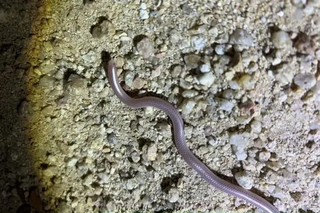
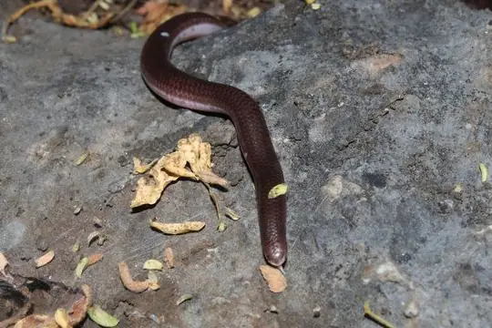
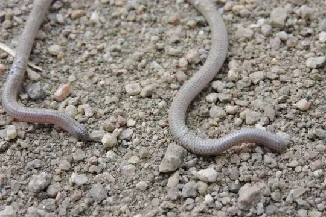
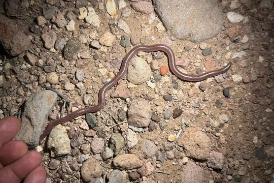
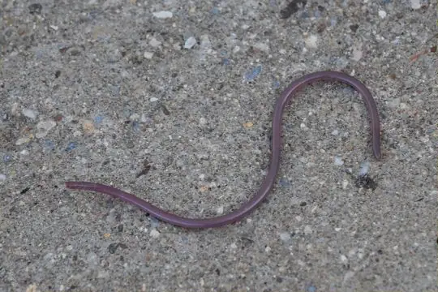
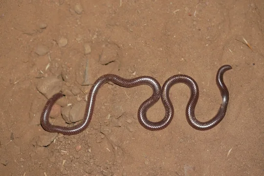

Rena
The genus Rena (family Leptotyphlopidae) has 11 living species in SnakeList (none venomous), recorded in 5 countries.
- 11living species
- 11non-venomous
- 5countries
About the genus
A genus of the family Leptotyphlopidae (thread snakes).
Species
Showing 11 species

Boettger's Cape Thread SnakeRena boettgeri- No photo yetDuges' ThreadsnakeRena dugesii

Giant Blind SnakeRena maxima- No photo yetIverson's BlindsnakeRena iversoni
- No photo yetMichoacán Slender Blind SnakeRena bressoni
- No photo yetNew Mexico ThreadsnakeRena dissecta

Southern Blind Snake (unguirostris)Rena unguirostris
Texas Blind SnakeRena dulcis
Trans-Pecos ThreadsnakeRena segrega
Western ThreadsnakeRena humilis- No photo yetRena myopica
No snakes in Rena match.
About the genus Rena
- Distribution: living species recorded in 5 countries, on 2 continents: North America, South America.
- Family: Leptotyphlopidae.
- Countries and territories: Argentina, Bolivia, Mexico, Paraguay, United States.
Compare its species
Its living species side by side. Lengths come only from SnakeList’s reviewed, sourced accounts; the others are left blank rather than guessed.
| Species | Venom | Recorded in | Adult length (reviewed accounts) |
|---|---|---|---|
| Boettger's Cape Thread Snake Rena boettgeri | Non-venomous | 1 country (North America) | No reviewed account yet |
| Duges' Threadsnake Rena dugesii | Non-venomous | 1 country (North America) | No reviewed account yet |
| Giant Blind Snake Rena maxima | Non-venomous | 1 country (North America) | No reviewed account yet |
| Iverson's Blindsnake Rena iversoni | Non-venomous | 1 country (North America) | No reviewed account yet |
| Michoacán Slender Blind Snake Rena bressoni | Non-venomous | 1 country (North America) | No reviewed account yet |
| New Mexico Threadsnake Rena dissecta | Non-venomous | 2 countries (North America) | No reviewed account yet |
| Southern Blind Snake (unguirostris) Rena unguirostris | Non-venomous | 3 countries (South America) | No reviewed account yet |
| Texas Blind Snake Rena dulcis | Non-venomous | 2 countries (North America) | No reviewed account yet |
| Trans-Pecos Threadsnake Rena segrega | Non-venomous | 2 countries (North America) | No reviewed account yet |
| Western Threadsnake Rena humilis | Non-venomous | 2 countries (North America) | No reviewed account yet |
| Rena myopica | Non-venomous | 1 country (North America) | No reviewed account yet |